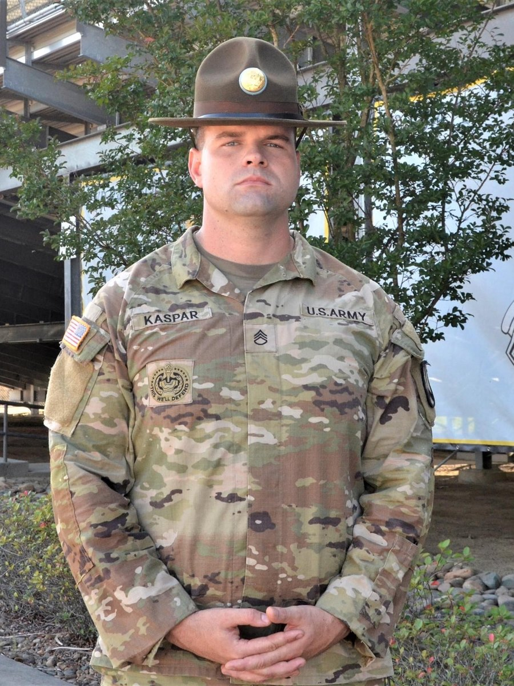
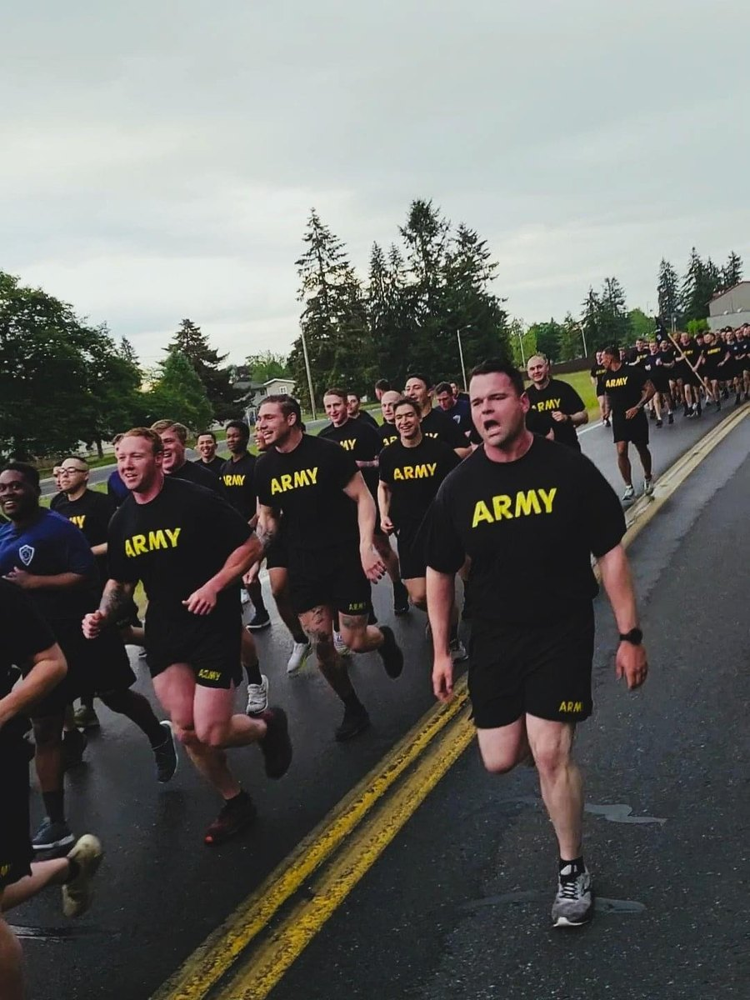
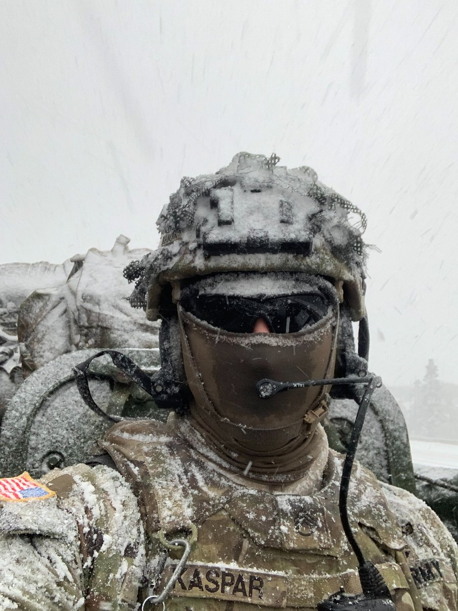

AI & DATA SCIENCE
Turning data into structured analysis, automation, and decision support.
Bridging military leadership, operations excellence, analytics, and AI implementation to solve complex problems and deliver practical, evidence-driven systems.


Turning data into structured analysis, automation, and decision support.
Driving mission outcomes through people, process, accountability, and technology.
Building governed frameworks that improve clarity, control, and execution.
13 years of military service built on duty, honor, evidence, and accountability.
Governed multi-agent control plane that orchestrates workflows, approvals, secure execution, and operational learning.
View project →Governed registry of 46 versioned AI capabilities with semantic routing, lifecycle controls, field validation, provenance, evaluation, and continuous improvement.
Explore the capability system →NFL and MLB analytical systems built around provenance, validation, research discipline, predictive modeling, simulation, and decision support.
Evidence-based operating system for requirements, readiness, professional translation, and reusable career evidence.
Requirement extraction, evidence matching, fit-gap analysis, and explainable opportunity decisions.
View project →


Thirteen years of source-backed leadership evidence translated into civilian operations capability: training at scale, logistics, multimillion-dollar resource stewardship, risk management, workforce development, and measurable performance improvement.
Explore the evidence →Five evidence-backed academic cases spanning enterprise strategy, product launch, healthcare operations, profitability analysis, corporate finance, implementation planning, and executive decision support. New Horizons Airlines serves as the capstone centerpiece.
Explore the MBA portfolio →From the battlefield to the boardroom.
Building systems. Solving hard problems. Delivering results.